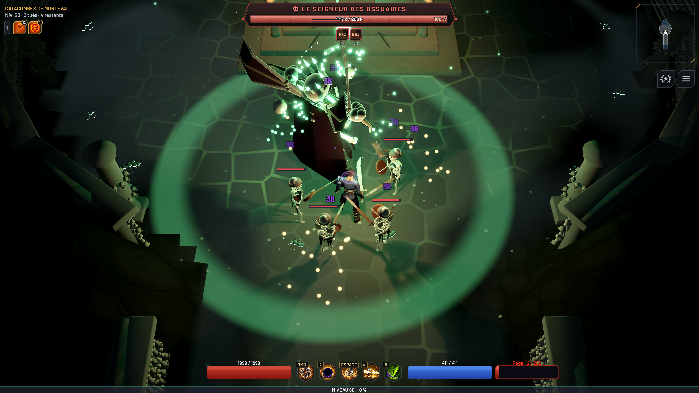

Monstres vivants, boss redoutables et sortie au grand jour
Les monstres des premiers niveaux bougent comme de vraies créatures, chaque boss a ses attaques et les catacombes débouchent à l'air libre.
Les monstres des trois premiers niveaux bougent enfin comme des vraies créatures, les boss ont chacun leurs attaques et les catacombes débouchent à l'air libre. Bon jeu !
Des monstres vivants
Le loup, le crabe, les gobelins, les squelettes, les morts errants et les spectres ont été réanimés de zéro : les pieds restent posés au sol et chaque créature a son allure. Le loup rôde au pas puis galope quand il chasse, le crabe marche de côté, les morts errants boitent bras tendus et le crâne des squelettes roule au sol à leur mort.
Des boss redoutables
Grumm arrache un rocher pour vous le lancer, le Fossoyeur fait surgir des mains de squelettes sous vos pieds et lâche les âmes de sa lanterne, le Seigneur des Ossuaires fait tourner ses faux et referme une cage de pieux d'os autour de vous. Chaque attaque s'annonce au sol avant de frapper.

Sortie au grand jour
Après la dernière porte des catacombes de Morteval, une galerie de terre remonte vers la lumière : on aperçoit la surface comme en sortant d'un terrier, puis on débouche dans une prairie ensoleillée.
Notes de version
Monstres
- Animations entièrement refaites pour le loup, le crabe, les gobelins, les squelettes, les morts errants et les spectres : pieds qui restent posés au sol, articulations réelles, allures distinctes selon que la créature erre ou vous poursuit.
- Loup : vraies pattes de canidé, pas à quatre temps quand il rôde, galop quand il chasse ; il se ramasse avant de bondir et mord en secouant la tête.
- Crabe refait : carapace dentelée, yeux pédonculés, grosse pince à doigt mobile, et il marche de côté.
- Squelettes : marche raide, tête qui tressaute, bras ballants, épée tenue pour de bon ; à leur mort, ils s'effondrent et le crâne roule au sol.
- Morts errants : ils boitent en traînant la jambe, bras tendus vers vous.
- Spectre des ossuaires redessiné : il flotte, sa robe en lambeaux ondule et traîne derrière lui, crâne et yeux luisants sous la capuche, longues griffes ; il est translucide.
Boss
- Grumm, Roi des Trolls : mousse, champignons et un jeune arbre sur le dos ; il arrache un rocher pour vous le lancer et fait jaillir des racines en trois sillons.
- Le Fossoyeur : bougies et corbeau sur son cercueil ; des mains de squelettes surgissent sous vos pieds, les âmes de sa lanterne vous traquent, et il projette de la terre d'une pelletée.
- Le Seigneur des Ossuaires : ailes d'os et flamme d'âme ; tourbillon de faux, cage de pieux d'os qui se referme autour de vous et spirale d'âmes.
- Chaque attaque s'annonce au sol avant de frapper.
Catacombes de Morteval
- Les murs d'ossements épousent les galeries, sans trous aux angles ; les escaliers ont leurs murs et sont éclairés par des torchères.
- Nouvelle sortie : après la dernière porte, une galerie de terre remonte vers la lumière ; on aperçoit la surface comme en sortant d'un terrier, puis on débouche dans une prairie ensoleillée.
Corrections
- Les marches des escaliers des catacombes ne sont plus noires.